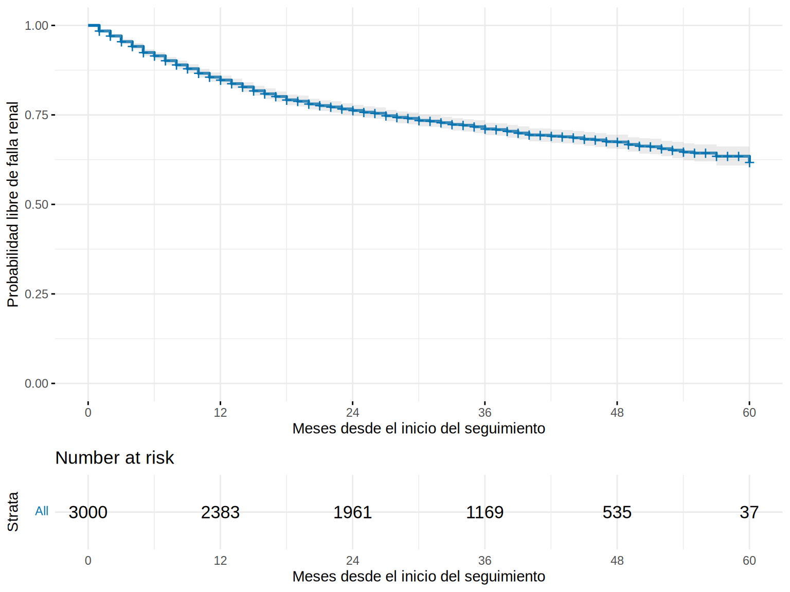
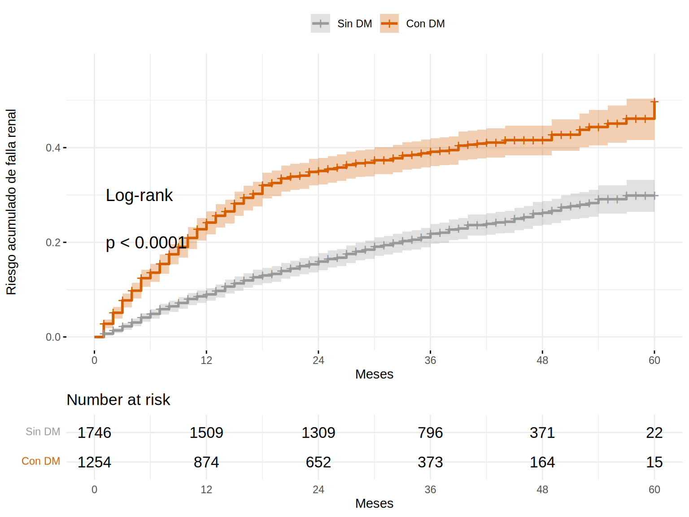

El estimador de Kaplan-Meier (KM) calcula la probabilidad de seguir libre del evento a lo largo del tiempo. En cada instante en que ocurre un evento, la curva baja en proporción a los pacientes que todavía estaban en riesgo; los censurados salen del denominador sin hacer bajar la curva.
Call: survfit(formula = Surv(tiempo_meses, krt) ~ 1, data = coh)
n events median 0.95LCL 0.95UCL
[1,] 3000 839 NA NA NA
La mediana de supervivencia libre de falla renal es NA (no se alcanzó): menos del 50 % tuvo falla renal durante el seguimiento. Para describir la curva se reporta la supervivencia a tiempos fijos, con IC:
Interpretación: la probabilidad de seguir sin falla renal a los 36 meses es ~71 % (IC 69-73 %); el riesgo acumulado es 1 − S(t) ≈ 29 %. A los 60 meses quedan muy pocos pacientes en riesgo (37): la cola derecha es poco confiable, y el IC se ensancha.
Advertencia⚠️ Cuidado con el final de la curva
Cuando quedan pocos pacientes en riesgo, la curva “salta” con cada evento y el IC es muy amplio. Muestra siempre la tabla de pacientes en riesgo debajo de la curva y no interpretes la cola con < 10-20 pacientes en riesgo.
ggsurvplot(km, data =coh, conf.int =TRUE, risk.table =TRUE, risk.table.height =0.25, break.time.by =12, xlab ="Meses desde el inicio del seguimiento", ylab ="Probabilidad libre de falla renal", legend ="none", palette ="#0072B2", ggtheme =theme_minimal(base_size =11))

Tip💡 Tip práctico: ¿curva de supervivencia o de riesgo acumulado?
Si el evento es frecuente y lo que importa es “cuántos se salvan”, usa la supervivencia (curva descendente).
Si el evento es raro (diálisis a 5 años en un 8 %), la curva de supervivencia queda pegada al 100 % y no se aprecian diferencias; usa el riesgo acumulado (fun = "event"), que sube desde 0 y amplía la escala.
Comparar grupos: log-rank
¿Los pacientes con diabetes llegan antes a la falla renal?
km_dm<-survfit(Surv(tiempo_meses, krt)~dm, data =coh)ggsurvplot(km_dm, data =coh, conf.int =TRUE, risk.table =TRUE, pval =TRUE, pval.method =TRUE, fun ="event", break.time.by =12, xlab ="Meses", ylab ="Riesgo acumulado de falla renal", legend.title ="", legend.labs =c("Sin DM", "Con DM"), palette =c("#999999", "#D55E00"), ggtheme =theme_minimal(base_size =11))

El log-rank compara las curvas completas: en cada instante con evento, compara los eventos observados en cada grupo con los esperados si no hubiera diferencia:
Call:
survdiff(formula = Surv(tiempo_meses, krt) ~ dm, data = coh)
N Observed Expected (O-E)^2/E (O-E)^2/V
dm=Sin DM 1746 380 531 42.9 119
dm=Con DM 1254 459 308 74.0 119
Chisq= 119 on 1 degrees of freedom, p= <2e-16
El valor p es diminuto: la diabetes se asocia con falla renal más temprana. Pero el log-rank solo dice que las curvas difieren, no cuánto. Para cuantificar, se reportan las diferencias de riesgo a tiempos fijos o el HR de Cox (9.3):
rs<-summary(km_dm, times =c(12, 24, 36, 60))tibble(grupo =as.character(rs$strata), meses =rs$time, riesgo_acumulado =1-rs$surv, ic_inf =1-rs$upper, ic_sup =1-rs$lower)|>mutate(across(where(is.numeric), \(x)round(x, 3)))
Observa que la distancia entre las curvas se abre en los primeros 18-24 meses y luego se mantiene casi paralela: lo retomaremos en 9.4.
NotaVariantes del log-rank
El log-rank da igual peso a todos los instantes y es más potente cuando el cociente de riesgos es constante (riesgos proporcionales). Si las diferencias son tempranas, survdiff(..., rho = 1) (Peto-Peto) da más peso al inicio. Elige la variante antes de ver los datos.
Comparar más de dos grupos y ajustar por estratos
coh<-coh|>mutate(cat_a =cut(uacr, c(0, 30, 300, Inf), right =FALSE, labels =c("A1", "A2", "A3")))survdiff(Surv(tiempo_meses, krt)~cat_a, data =coh)
El log-rank estratificado compara grupos dentro de los estratos de otra variable y luego combina. Es una forma simple de ajustar por una sola variable categórica; para varias se usa Cox.
Mediana y media
Mediana de supervivencia: tiempo en que la curva cruza 0.5. Es robusta, pero puede no estar definida (como aquí) si pocos pacientes tienen el evento.
Media: no se puede calcular con censura a la derecha sin extrapolar; por eso se usa la media restringida (9.6).
km_a<-survfit(Surv(tiempo_meses, 1-krt)~1, data =coh)# seguimiento medianokm_a
Call: survfit(formula = Surv(tiempo_meses, 1 - krt) ~ 1, data = coh)
n events median 0.95LCL 0.95UCL
[1,] 3000 2161 37 37 38
Importante🎯 En resumen
KM estima la probabilidad de seguir libre del evento; censurados salen de los “en riesgo” sin bajar la curva.
Reporta supervivencia (o riesgo acumulado) a tiempos fijos con IC y la mediana si se alcanza; muestra la tabla de riesgo.
Log-rank compara curvas completas: da un valor p, no un tamaño de efecto; complementa con diferencias a tiempos fijos o HR.
Evita interpretar el final de la curva (pocos en riesgo).
Un log-rank estratificado ajusta por una variable; para varias, usa Cox.
Ejercicio
Grafica el KM por sexo y por categoría de albuminuria (A1-A3). ¿Qué grupo tiene mayor riesgo?
Calcula el riesgo acumulado a 36 meses en pacientes con TFGe < 20 vs. ≥ 20 con IC.
Haz el KM de muerte (estado = 2) como evento, tratando la falla renal como censura. ¿Qué problema aparece al interpretarlo? (Pista: lo veremos en 9.5.)